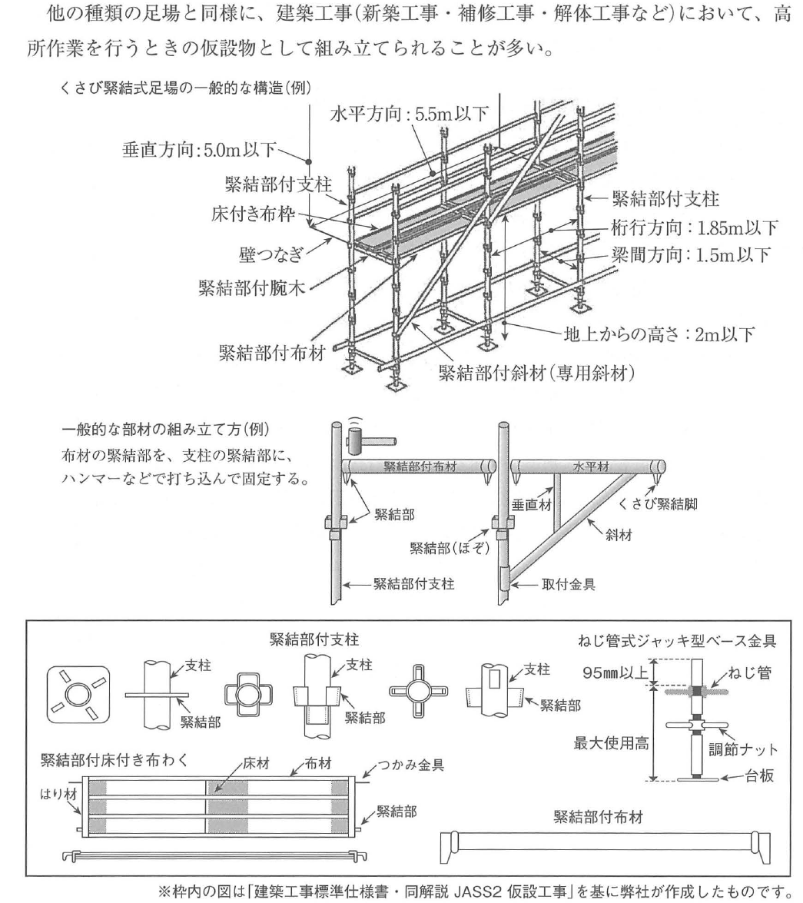
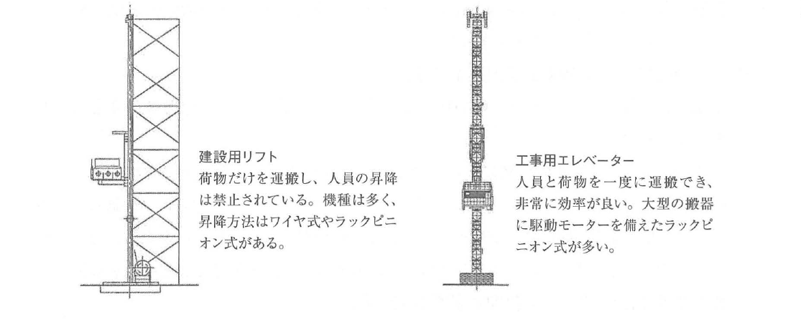
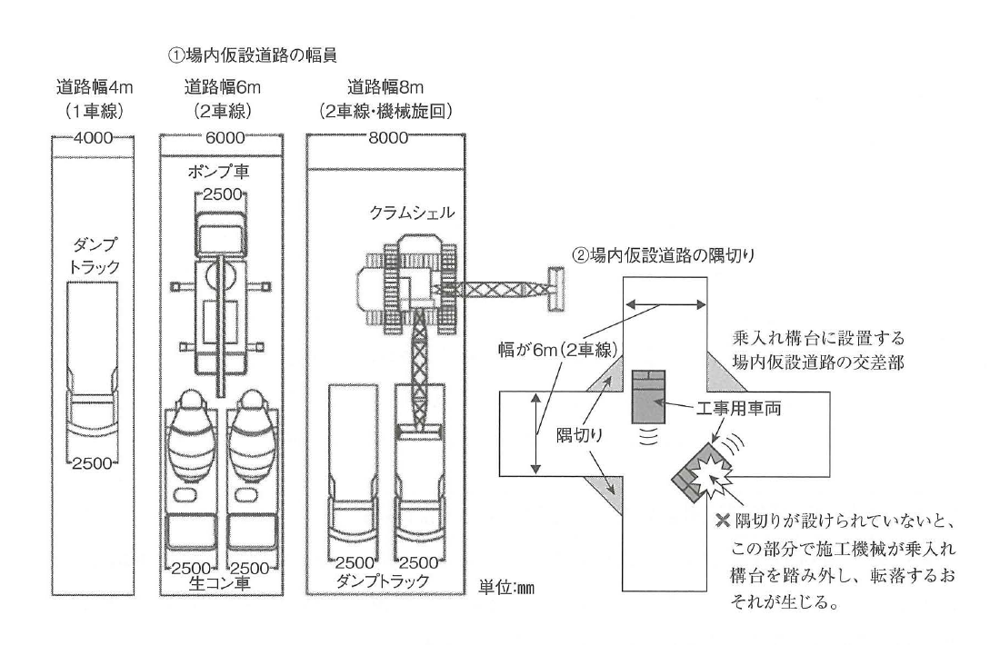

原文
令和5年度 問題2 施工計画（仮設物の設置計画）
建築工事における次の1.から3.の仮設物の設置を計画するに当たり、留意すべき事項及び検討すべき事項を、それぞれ2つ具体的に記述しなさい。
ただし、解答はそれぞれ異なる内容の記述とし、申請手続、届出及び運用管理に関する記述は除くものとする。
また、使用資機材に不良品はないものとする。
- くさび緊結式足場
- 建設用リフト
- 場内仮設道路
Nguồn: Book page 148
建築工事における次の1.から3.の仮設物の設置を計画するに当たり、留意すべき事項及び検討すべき事項を、それぞれ2つ具体的に記述しなさい。
ただし、解答はそれぞれ異なる内容の記述とし、申請手続、届出及び運用管理に関する記述は除くものとする。
また、使用資機材に不良品はないものとする。
Khi lập kế hoạch bố trí cho từng loại trong ba công trình tạm dưới đây trong công trình xây dựng, hãy trình bày cụ thể các nội dung cần lưu ý hoặc cần xem xét, mỗi loại 2 nội dung.
Tuy nhiên, các nội dung trả lời phải khác nhau; không được trình bày các nội dung liên quan đến thủ tục xin phép, thủ tục thông báo và quản lý vận hành sau khi lắp đặt.
Ngoài ra, giả định rằng các vật tư và thiết bị sử dụng không có sản phẩm lỗi.
Nguồn: Book page 148
出典：くさび緊結式足場の組立て及び使用に関する技術基準
Nguồn trong sách: Tiêu chuẩn kỹ thuật về lắp dựng và sử dụng giàn giáo kiểu liên kết nêm.
Nguồn: Book page 148
出典：クレーン等安全規則
Nguồn trong sách: Quy tắc an toàn đối với cần trục và các thiết bị tương tự.
Nguồn: Book page 148
出典：建築工事標準仕様書・同解説 JASS2 仮設工事
Nguồn trong sách: 建築工事標準仕様書・同解説 JASS2 仮設工事.
Nguồn: Book page 149
くさび緊結式足場は、緊結部付支柱（一定間隔ごとに緊結部が取り付けられた鋼管）に、緊結部付腕木（水平材）・緊結部付布材（水平材）・緊結部付斜材（専用斜材）などを組み合わせ、支柱の緊結部に他部材の緊結部を打ち込むことで組み立てる足場である。
他の種類の足場と同様に、建築工事（新築工事・補修工事・解体工事など）において、高所作業を行うときの仮設物として組み立てられることが多い。
Giàn giáo kiểu liên kết nêm được cấu tạo bằng cách kết hợp trụ đứng có bộ phận liên kết, thanh 腕木 có bộ phận liên kết, thanh 布 có bộ phận liên kết và thanh chéo chuyên dụng, sau đó đóng bộ phận liên kết của các cấu kiện khác vào bộ phận liên kết trên trụ đứng để lắp dựng.
Tương tự các loại giàn giáo khác, loại giàn giáo này thường được lắp làm công trình tạm phục vụ công việc trên cao trong công trình xây mới, sửa chữa và tháo dỡ.
Nguồn: Book page 149
布材の緊結部を、支柱の緊結部に、ハンマーなどで打ち込んで固定する。
図中の主な表示：緊結部付布材、緊結部付支柱、緊結部、緊結部（ほぞ）、水平材、垂直材、斜材、くさび緊結脚、取付金具、支柱、床材、布材、はり材、つかみ金具、緊結部付床付き布わく、緊結部付布材。
図中の表示：ねじ管、最大使用高、調節ナット、台板。ねじ管部分の表示は95mm以上。
※枠内の図は「建築工事標準仕様書・同解説 JASS2 仮設工事」を基に弊社が作成したものです。
Bộ phận liên kết của thanh ngang được đưa vào bộ phận liên kết trên trụ đứng rồi đóng bằng búa để cố định.
Hình chi tiết minh họa bộ phận liên kết trên trụ, mộng（ほぞ）, cấu kiện ngang và đứng, thanh chéo, phụ kiện lắp, tấm sàn và phụ kiện kẹp（つかみ金具）.
Hình thể hiện ống ren, chiều cao sử dụng tối đa, đai ốc điều chỉnh và bản đế. Phần ống ren phía trên được ghi 95 mm trở lên.
Chú thích của sách: Hình nằm trong khung được lập dựa trên 「建築工事標準仕様書・同解説 JASS2 仮設工事」.

Hình thể hiện ba cấp độ: toàn bộ hệ giàn giáo, chi tiết khóa nêm giữa các cấu kiện và chi tiết chân đế điều chỉnh. Các trị số 1,85 m, 1,5 m, 5,0 m, 5,5 m và 2 m được gắn trực tiếp với đúng đối tượng đo.
Nguồn: Book page 150
くさび緊結式足場は、足場の高さが45m以下になるとき（主として中低層ビルの工事）に使用される「ビル工事用くさび緊結式足場」と、軒の高さが10m未満の木造住宅の工事に使用される「住宅工事用くさび緊結式足場」に分類されている。
くさび緊結式足場は、大規模工事（足場の高さが45mを超えるような高層ビルの工事）に使用される一般的な枠組足場と比較して、次のような利点と欠点を有している。
Giàn giáo nêm được chia thành hai loại: giàn giáo nêm dùng cho công trình tòa nhà khi chiều cao giàn giáo không quá 45 m, chủ yếu cho nhà thấp và trung tầng; và giàn giáo nêm dùng cho nhà gỗ có chiều cao mái hiên dưới 10 m.
So với giàn giáo khung thông thường dùng cho công trình quy mô lớn, giàn giáo nêm có các ưu và nhược điểm sau:
Nguồn: Book page 150
くさび緊結式足場の設置を計画するにあたり、留意すべき事項および検討すべき事項は、「くさび緊結式足場の組立て及び使用に関する技術基準」において、主として次のような事項が定められている。
なお、1級建築施工管理技術検定試験では、比較的大規模な工事を取り扱うことが多い。そのため、下記に掲げる事項は、原則として、「ビル工事用くさび緊結式足場」に適用される留意事項・検討事項である。
※上記のうち、1項目または相互に関連した2項目を取り出せば、それが解答となる。
※上記の③および⑨の数値は、試験で問われることが多いので、確実に覚えておこう。
Các nội dung chính khi lập kế hoạch bố trí giàn giáo nêm được quy định trong 「くさび緊結式足場の組立て及び使用に関する技術基準」. Do kỳ thi thường xử lý công trình tương đối lớn, các nội dung dưới đây về nguyên tắc áp dụng cho giàn giáo nêm dùng cho công trình tòa nhà.
Chỉ cần lấy 1 nội dung hoặc 2 nội dung có liên quan trong danh sách trên là có thể cấu thành một đáp án.
Sách đặc biệt nhấn mạnh các trị số tại mục ③ và ⑨ vì chúng thường được hỏi trong kỳ thi.
Nguồn: Book page 151
建設用リフトとは、荷のみを運搬することを目的とするエレベーターで、土木・建築などの工事の作業に使用されるものをいう。この用語の定義は、労働安全衛生法施行令に定められている。
建設用リフトには、人を載せることができないので、荷物と労働者を同時に運搬する必要があるときは、建設用リフトではなく工事用エレベーターを使用する必要がある。
荷物だけを運搬し、人員の昇降は禁止されている。機種は多く、昇降方法はワイヤ式やラックピニオン式がある。
人員と荷物を一度に運搬でき、非常に効率が良い。大型の搬器に駆動モーターを備えたラックピニオン式が多い。
建設用リフト là loại thang nâng có mục đích chỉ vận chuyển hàng hóa, dùng trong công tác xây dựng dân dụng, công trình kiến trúc và các công việc tương tự. Định nghĩa này được quy định trong Nghị định thi hành Luật An toàn và Vệ sinh lao động.
建設用リフト không được phép chở người. Khi cần vận chuyển đồng thời hàng hóa và người lao động, phải sử dụng 工事用エレベーター, thang máy công trường.
Chỉ vận chuyển hàng hóa; cấm người sử dụng để lên xuống. Phương thức nâng hạ gồm loại dùng cáp và loại rack-pinion.
Có thể vận chuyển đồng thời người và hàng hóa, hiệu suất cao; phổ biến là loại rack-pinion có động cơ dẫn động trên cabin/sàn vận chuyển cỡ lớn.

| Tiêu chí | 建設用リフト | 工事用エレベーター |
|---|---|---|
| Hàng hóa | Có | Có |
| Người | Không được chở | Có thể chở |
| Cơ cấu nâng | Cáp hoặc rack-pinion | Chủ yếu rack-pinion |
| Đặc điểm | Thiết bị vận chuyển hàng | Hiệu suất cao khi chở cả người và hàng |
Nguồn: Book page 151
建設用リフトの設置を計画するにあたり、留意すべき事項および検討すべき事項のうち、基礎的事項（工事現場における一般的な内容）は、次の通りである。
建設用リフトの設置計画における留意事項・検討事項は、「クレーン等安全規則」の「第6章：建設用リフト」（第172条～第201条）に定められている。（条文から抜粋・一部改変）
Các nội dung cơ bản và thông dụng tại công trường khi lập kế hoạch bố trí 建設用リフト như sau:
Các yêu cầu liên quan được quy định tại Chương 6, Điều 172 đến Điều 201 của クレーン等安全規則.
Nguồn: Book pages 151-152
この問題に解答するときは、「申請手続・届出・運用管理・使用資機材の不具合」に関する記述を解答としてはならないことに注意する必要がある。記述しようとする解答が「建設用リフトの設置」に関する内容になっているかどうかは、常に確認しておく必要がある。
一例として、本書173ページにあるような「過負荷の制限・運転の合図・搭乗の制限」に関する事項を解答とした場合、それは運用管理に関する記述に該当するので、不正解となる。
事業者は、建設用リフトについて、巻上げ用ワイヤロープに標識を付すること、警報装置を設けることなど、巻上げ用ワイヤロープの巻過ぎによる労働者の危険を防止するための措置を講じなければならない。
事業者は、建設用リフトを用いて作業を行うときは、次の場所に労働者を立ち入らせてはならない。
事業者は、建設用リフトの組立てまたは解体の作業を行うときは、次の措置を講じなければならない。
Khi trả lời câu hỏi này, phải lưu ý rằng không được dùng các nội dung về thủ tục xin phép, thủ tục thông báo, quản lý vận hành hoặc hư hỏng của vật tư, thiết bị làm đáp án. Nội dung viết ra phải thực sự liên quan đến việc bố trí/lắp đặt 建設用リフト.
Các nội dung như hạn chế quá tải, tín hiệu khi vận hành và hạn chế người lên thiết bị thuộc quản lý vận hành, nên sẽ bị chấm sai.
Đối với cáp nâng, phải gắn dấu hiệu, bố trí thiết bị cảnh báo và thực hiện biện pháp phòng ngừa nguy hiểm do cáp nâng bị cuốn quá mức.
Khi sử dụng lift, không được cho người lao động đi vào các khu vực sau:
設置計画 không đồng nghĩa với 運用管理. Các nội dung 「過負荷の制限・運転の合図・搭乗の制限」 bị sách xác định là không phù hợp cho câu hỏi về kế hoạch bố trí.
Nguồn: Book page 152
建設用リフトの設置を計画するにあたり、「建設用リフト構造規格」から次のような内容を解答とすることもできると思われる。（条文から重要と思われる部分をいくつか要約）
Một số nội dung trong Tiêu chuẩn kết cấu lift xây dựng có thể dùng làm đáp án:
Nguồn: Book page 153
場内仮設道路は、工事用道路の一種である。工事用道路は、工事現場が広いときなどに、建設工事に用いる資機材の搬入・搬出などのために、工事用車両が通行する部分である。
工事用道路は、次のように分類されているが、「場内仮設道路」には、下記の①だけが該当する。
場内仮設道路 là một loại đường phục vụ thi công. Đây là phần đường dành cho xe công trường đi lại để vận chuyển vật tư, thiết bị vào và ra khỏi công trường.
Trong bốn loại đường phục vụ thi công dưới đây, 場内仮設道路 chỉ tương ứng với loại ①:
Nguồn: Book page 153
場内仮設道路の設置を計画するにあたり、留意すべき事項および検討すべき事項には、次のようなものがある。ここで最も重要なことは、場内仮設道路の設置位置および安全誘導措置（表示板の設置など）を十分に検討することである。
Điểm quan trọng nhất khi lập kế hoạch là xem xét đầy đủ vị trí bố trí đường tạm và biện pháp hướng dẫn an toàn, chẳng hạn biển chỉ dẫn.
Nguồn: Book pages 153-154
乗入れ構台とは、建築工事において、建設機械などの通り道や、クレーンの作業場所として設けられる頑丈な構台である。この「建設機械などの通り道」は、場内仮設道路に該当する。
単位：mm
乗入れ構台に設置する場内仮設道路の交差部。幅が6m（2車線）。隅切り。工事用車両。
隅切りが設けられていないと、施工機械が乗入れ構台を踏み外し、転落するおそれが生じる。
乗入れ構台 là sàn/kết cấu tạm chắc chắn dùng làm đường cho máy móc xây dựng và nơi làm việc của cần trục. Phần đường đi trên kết cấu này được coi là đường tạm trong công trường.
Đơn vị trong hình: mm.
Nút giao trên 乗入れ構台 của đường rộng 6 m, 2 làn, được mở/vát góc để tạo không gian quay xe.
Khi không có 隅切り, máy thi công có nguy cơ đi chệch khỏi mép 乗入れ構台 và rơi xuống.

Ba sơ đồ bên trái gắn bề rộng đường với điều kiện lưu thông. Sơ đồ bên phải cho thấy góc vuông không có 隅切り làm giảm quỹ đạo quay, khiến máy có thể đi ra ngoài mép 乗入れ構台.
Nguồn: Book page 154
場内仮設道路は、資機材運搬車両の通行・工事用機械の移動・揚重機械の作業スペース・工事関係者の歩行など、多岐にわたる通行・スペースとしての機能を満たす必要がある。
場内仮設道路の設置計画は、道路としての品質と、労働者の安全を確保する観点から考える。
Đường tạm phải đáp ứng đồng thời việc xe vật tư đi lại, máy thi công di chuyển, máy nâng làm việc và người liên quan đi bộ.
Kế hoạch bố trí phải được xem xét từ hai góc độ: chất lượng của tuyến đường và an toàn của người lao động.
| 日本語 | 読み方 | Tiếng Việt | Giải thích | Liên quan |
|---|---|---|---|---|
| くさび緊結式足場 | くさびきんけつしきあしば | Giàn giáo liên kết nêm | Giàn giáo lắp bằng cách đóng đầu liên kết của cấu kiện vào bộ phận liên kết trên trụ. | 緊結部、支柱、腕木、布材、斜材 |
| 緊結部 | きんけつぶ | Bộ phận liên kết | Vị trí cơ khí để ghép các cấu kiện của giàn giáo nêm. | くさび、ほぞ |
| 緊結部付支柱 | きんけつぶつきしちゅう | Trụ có bộ phận liên kết | Ống trụ đứng có các vị trí liên kết theo khoảng cách định sẵn. | 桁行方向、梁間方向 |
| 腕木 | うでぎ | Thanh ngang 腕木 | Cấu kiện ngang nối theo chiều từ công trình ra phía ngoài giàn giáo. | 支柱、壁つなぎ |
| 布材 | ぬのざい | Thanh ngang 布 | Cấu kiện ngang chạy dọc theo giàn giáo. | 床付き布枠 |
| 斜材 | しゃざい | Thanh chéo | Cấu kiện chéo chuyên dụng tăng ổn định cho hệ giàn giáo. | 筋交い |
| 桁行方向 | けたゆきほうこう | Phương dọc | Phương chạy dọc chiều dài của giàn giáo. | 1.85m以下 |
| 梁間方向 | はりまほうこう | Phương ngang | Phương từ phía công trình ra phía ngoài giàn giáo. | 1.5m以下 |
| 壁つなぎ | かべつなぎ | Neo giàn giáo vào công trình | Liên kết giữ giàn giáo với kết cấu công trình để hạn chế mất ổn định. | 垂直5.0m、水平方向5.5m |
| 抜止め | ぬけどめ | Chống tuột | Biện pháp ngăn mộng hoặc joint bị rút, tuột khỏi mối nối. | ほぞ、ジョイント |
| 作業床 | さぎょうゆか | Sàn công tác | Mặt sàn nơi người lao động đứng và thao tác. | 幅、隙間、手すり、中桟、幅木 |
| 中桟 | なかざん | Thanh giữa | Thanh ngang nằm giữa hệ tay vịn chống ngã. | 35cm以上50cm未満 |
| 幅木 | はばき | Tấm chắn chân | Cấu kiện dọc mép sàn nhằm hạn chế vật thể rơi. | 10cm以上 |
| ねじ管式ジャッキ型ベース金具 | ねじかんしきジャッキがたベースかなぐ | Đế kích kiểu ống ren | Đế chân giàn giáo có khả năng điều chỉnh cao độ bằng ren. | 敷板、敷盤、調節ナット |
| 敷板 | しきいた | Tấm kê | Tấm đặt dưới chân thiết bị hoặc giàn giáo để phân bố tải và hạn chế lún. | 地耐力 |
| 敷盤 | しきばん | Bản kê | Bản kê dưới chân giàn giáo phù hợp với điều kiện nền. | ねじ管式ジャッキ |
| 単管足場 | たんかんあしば | Giàn giáo ống đơn | Giàn giáo cấu tạo chủ yếu từ ống thép đơn. | くさび緊結式足場 |
| 枠組足場 | わくぐみあしば | Giàn giáo khung | Giàn giáo dùng khung chế tạo sẵn, có cường độ cao hơn giàn giáo nêm theo nội dung bài. | 高層ビル |
| 建設用リフト | けんせつようリフト | Lift xây dựng | Thiết bị chỉ vận chuyển hàng; không được chở người. | 工事用エレベーター |
| 工事用エレベーター | こうじようエレベーター | Thang máy công trường | Thiết bị có thể vận chuyển đồng thời người và hàng. | ラックピニオン式 |
| ラックピニオン式 | ラックピニオンしき | Kiểu rack-pinion | Cơ cấu bánh răng nhỏ ăn khớp với thanh răng để nâng hạ. | 昇降装置 |
| 搬器 | はんき | Cabin/bàn vận chuyển | Bộ phận mang tải của lift. | 積卸口、ウインチ |
| 巻過ぎ | まきすぎ | Cuốn quá mức | Tời tiếp tục cuốn cáp vượt quá giới hạn an toàn. | 警報装置 |
| 巻上げ用ワイヤロープ | まきあげようワイヤロープ | Cáp nâng | Cáp dùng để nâng 搬器. | シーブ |
| シーブ | シーブ | Sheave, puly dẫn cáp | Bánh dẫn hướng cho cáp thép. | ワイヤロープ |
| 不同沈下 | ふどうちんか | Lún không đều | Các vị trí của nền hoặc móng lún với mức khác nhau. | 基礎、歪み |
| ウインチ | ウインチ | Tời | Cơ cấu cuốn cáp để nâng, hạ, có phanh hãm. | 原動機、搬器 |
| 場内仮設道路 | じょうないかせつどうろ | Đường tạm trong công trường | Đường thi công nằm trong công trường, không có giao thông công cộng. | 工事用道路、乗入れ構台 |
| 場外仮設道路 | じょうがいかせつどうろ | Đường tạm ngoài công trường | Đường thi công tạm nằm ngoài phạm vi công trường. | 工事用道路 |
| 待避所 | たいひじょ | Chỗ tránh xe | Vị trí mở rộng để hai xe tránh hoặc nhường nhau. | すれ違い |
| 道路幅員 | どうろふくいん | Bề rộng đường | Bề rộng hữu dụng của tuyến đường. | 1車線、2車線 |
| 断面構造 | だんめんこうぞう | Kết cấu mặt cắt | Cấu tạo các lớp đường nhằm bảo đảm khả năng chịu tải. | 地耐力、20t自動車荷重 |
| 乗入れ構台 | のりいれこうだい | Kết cấu tạm cho xe, máy đi vào | Kết cấu chịu lực làm đường cho thiết bị và nơi làm việc của máy. | 場内仮設道路 |
| クラムシェル | クラムシェル | Clamshell | Thiết bị hoặc gầu ngoạm dùng cho đào và bốc vật liệu. | 旋回、道路幅8m |
| 隅切り | すみきり | Vát/mở góc giao đường | Phần cắt vát góc để tạo đủ không gian quay xe. | 交差部、転落防止 |
| 地耐力 | じたいりょく | Khả năng chịu tải của nền đất | Khả năng nền chịu tải mà không phá hoại hoặc lún quá mức. | 敷板、仮設道路 |
| 排水勾配 | はいすいこうばい | Độ dốc thoát nước | Độ dốc tạo để nước thoát khỏi mặt đường. | 耐久性 |
Quan hệ này được tổng hợp từ nội dung Book page 150. Giàn giáo nêm mạnh hơn giàn giáo ống đơn nhưng yếu hơn giàn giáo khung, nên sách kết luận loại nêm không phù hợp cho nhà cao tầng.
Khi chỉ vận chuyển vật liệu, dùng 建設用リフト. Khi cần vận chuyển đồng thời người và hàng, phải dùng 工事用エレベーター. Điểm phân biệt nằm ở chức năng cho người sử dụng để lên xuống, không nằm ở hình dạng bên ngoài.
Bề rộng 4 m, 6 m và 8 m không phải ba trị số rời rạc. Chúng lần lượt gắn với 1 làn, 2 làn và 2 làn có thêm vùng quét của máy quay. 隅切り bổ sung quỹ đạo quay tại nút giao để bánh hoặc thân máy không vượt khỏi mép kết cấu tạm.
| Đối tượng | Phương | Giới hạn |
|---|---|---|
| Trụ đứng | 桁行 | ≤ 1,85 m |
| Trụ đứng | 梁間 | ≤ 1,5 m |
| 壁つなぎ | Đứng | ≤ 5,0 m |
| 壁つなぎ | Ngang | ≤ 5,5 m |
Không đảo cặp 1,85/1,5 với cặp 5,0/5,5.
Tay vịn ≥ 90 cm; 中桟 từ 35 cm đến dưới 50 cm; 幅木 ≥ 10 cm; giằng chéo khoảng 45°.
建設用リフト = 荷のみ. Không chở người. 「過負荷の制限・運転の合図・搭乗の制限」 thuộc 運用管理, không phù hợp với câu hỏi về 設置計画. Khoảng cách từ mép sàn cửa bốc dỡ đến mép sàn 搬器 là ≤ 4 cm.
Nếu chuyển thành đường chính thức, thiết kế theo tải trọng ô tô 20 tấn. Logic tổng hợp: chịu tải + tách người/xe + tuyến ngắn, ít cong + thoát nước.
| {{HEADER_1}} | {{HEADER_2}} |
|---|---|
| {{ROW_KEY}} | {{ROW_RELATION}} |
{{NOTE_CONTENT}}
{{WARNING_CONTENT}}
{{MEMORY_ITEM}}